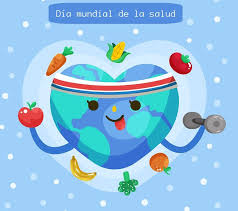
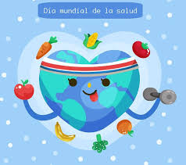

DIA MUNDIAL DE LA SALUD 7 DE ABRIL
Infografia
Informe sobre el Dia Mundial de la Salud
La OMS —WHO, por su sigla en inglés— se creó el 7 de abril de 1948 en Ginebra, Suiza. En esa misma oportunidad la Asamblea de las Naciones Unidas determinó que el 7 se abril se celebraría en todo el mundo el Día Mundial de la Salud.
En su constitución, la OMS establece que sus principios son:
- La salud es un estado de completo bienestar físico, mental y social, y no solamente la ausencia de afecciones o enfermedades.
- El goce del grado máximo de salud que se pueda lograr es uno de los derechos fundamentales de todo ser humano sin distinción de raza, religión, ideología política o condición económica o social.
- La salud de todos los pueblos es una condición fundamental para lograr la paz y la seguridad y depende de la más amplia cooperación de las personas y de los Estados.
- Los resultados alcanzados por cada Estado en el fomento y protección de la salud son valiosos para todos.
- La desigualdad de los diversos países en lo relativo al fomento de la salud y el control de las enfermedades, sobre todo las transmisibles, constituye un peligro común.
- El desarrollo saludable del niño es de importancia fundamental; la capacidad de vivir en armonía en un mundo que cambia constantemente es indispensable para este desarrollo.


 1
1 2
2 3
3 4
4


 
